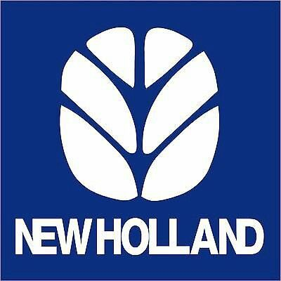

COLHEITADEIRAS NEW Holland

A New Holland está presente em todos os campos. Sinônimo de colheita, especialista no sucesso do produtor, ela está sempre atenta às demandas do mercado, aos diversos segmentos e às suas expectativas. E como líder absoluta em colheitadeiras, a New Holland possui duas máquinas com a marca da eficiência, da qualidade e da produtividade: TC 4.90 e TC 5.90
A nova TC
A nova linha de colheitadeiras TC traz toda a herança de confiança e conhecimento do campo que a New Holland acumulou ao longo dos últimos anos no Brasil, além de elevar a eficiência e a confiabilidade para novos patamares. Exatamente como você precisa. Os dois modelos são equipados com o tradicional sistema de debulha por cilindro e separação por saca palhas. O mesmo que todo produtor e o mercado conhecem e confiam há mais de 20 anos. A partir daí, construímos uma máquina que coloca em primeiro plano as soluções focadas em produtividade. Tudo isso com simplicidade e criatividade.
 Novidades
NOVIDADES
A nova TC vem equipada com recursos como o novo sistema de flutuação elétrico que permite à plataforma copiar melhor o solo mesmo em regiões de relevo muito acidentado. Enquanto a nova posição do alimentador entrega o material em uma posição mais elevada, em relação à TC anterior, possibilitando um aumento na capacidade de colheita e uma diminuição no índice de perdas. É o que você mais precisa nos momentos críticos da colheita. Além disso, as novas TC foram projetadas para serem máquinas multicultura, podendo alterar sua configuração com poucas mudanças no sistema industrial, entregando alta performance em qualquer lavoura. Basta começar a colher para sentir como tudo flui muito melhor. Tudo isso com facilidade de operação, manutenção descomplicada e de baixo custo, sem abrir mão da robustez que você não abre mão. Afinal, o momento é de focar no seu negócio.
Novidades
NOVIDADES
A nova TC vem equipada com recursos como o novo sistema de flutuação elétrico que permite à plataforma copiar melhor o solo mesmo em regiões de relevo muito acidentado. Enquanto a nova posição do alimentador entrega o material em uma posição mais elevada, em relação à TC anterior, possibilitando um aumento na capacidade de colheita e uma diminuição no índice de perdas. É o que você mais precisa nos momentos críticos da colheita. Além disso, as novas TC foram projetadas para serem máquinas multicultura, podendo alterar sua configuração com poucas mudanças no sistema industrial, entregando alta performance em qualquer lavoura. Basta começar a colher para sentir como tudo flui muito melhor. Tudo isso com facilidade de operação, manutenção descomplicada e de baixo custo, sem abrir mão da robustez que você não abre mão. Afinal, o momento é de focar no seu negócio.